Branding & visibility studio for courageous brands
Rise into visibility, authority and impact with a clear strategy, differentiated brand and thought leadership content
We can grow your brand on four levels
For those who want to become the only choice in their industry
Be understood, and remembered.
For those who want a differentiated and scalable brand presence
Become unmistakably you.
For those who want to grow their influence on social media
Be seen in the right places.
For those ready to make a big, lasting impact.
Be chosen for what comes next.
Selected work
Learn moreWho we work with
For courageous brands and ambitious founders who want to build a legacy and create a lasting impact
Apply to work with us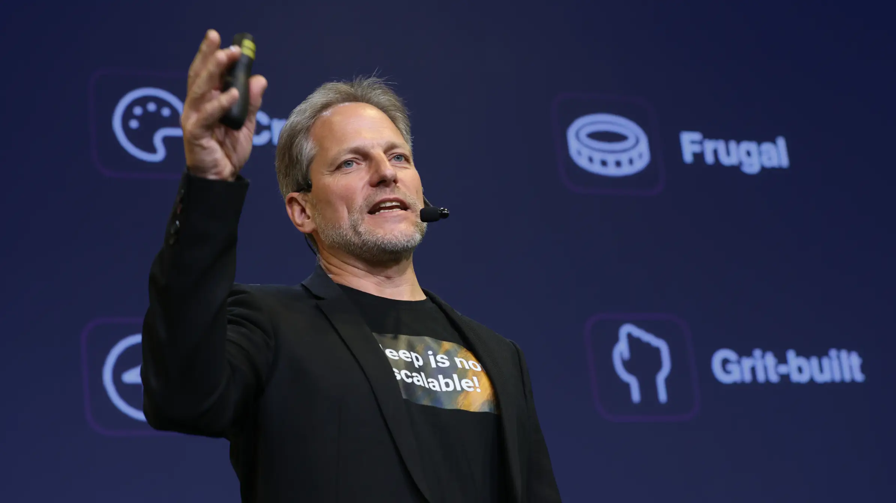
For keynote speakers
We bring company founders into the spotlight
Build your speaker brand and rise into thought leadership.
Learn moreBehind the work.
Brand strategy, design, web and content come together in one close team. No account managers or handoffs to people you've never met. You speak directly with the people doing the work.
Anzhelika
Founder · The mind behind it all
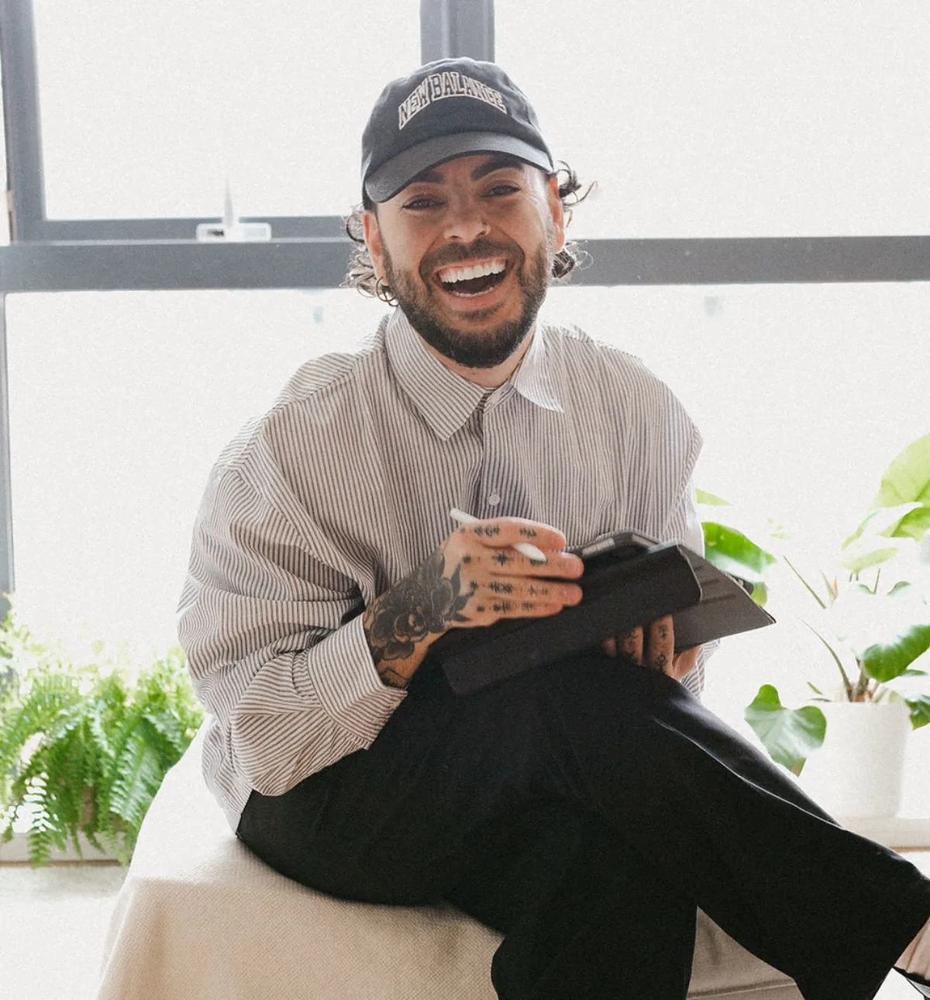
Kim
Brand identity, design systems, and everything you see
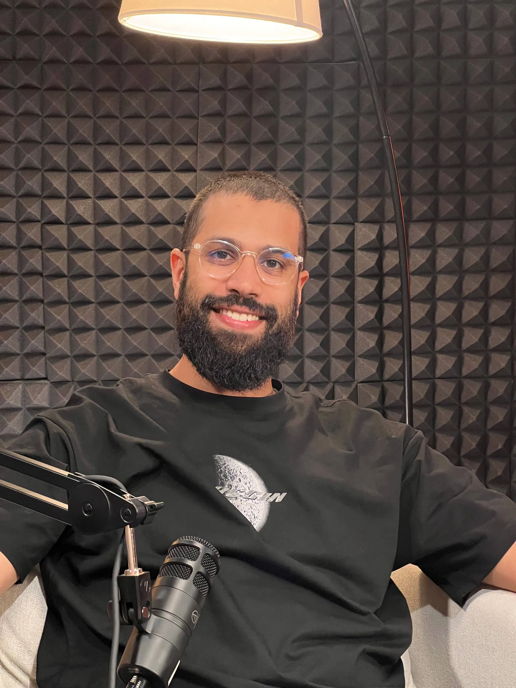
Ben
Web development, SEO, and everything web-side
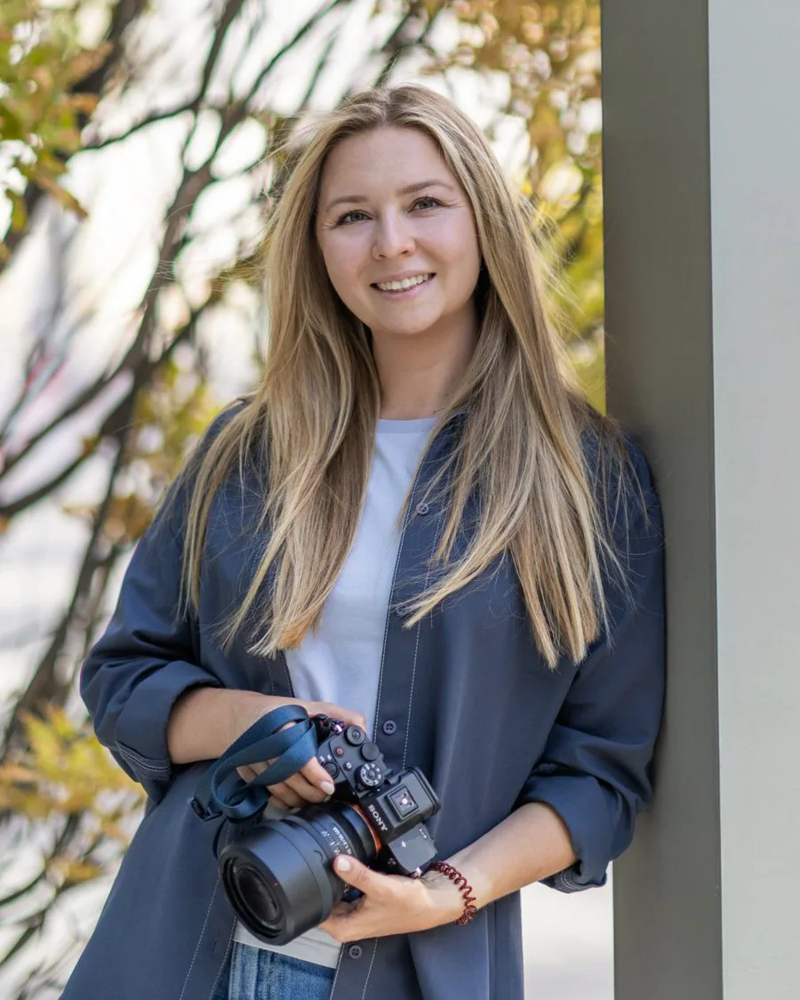
Kristina
Photographer, videographer and content creator
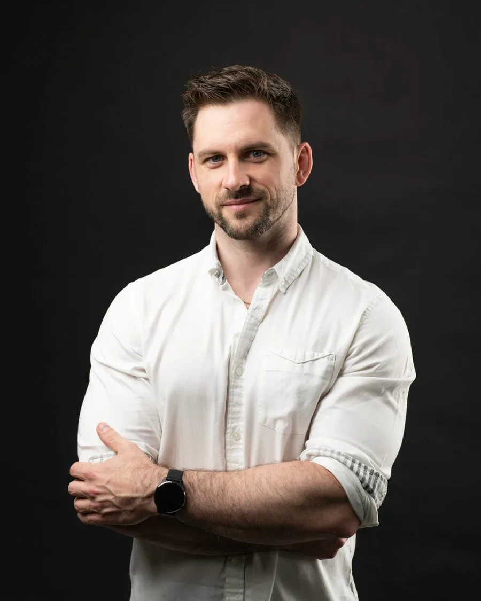
Marc
Partner and producer
The studio exists to give voices to people who want to make a real impact.
A courageous brand refuses to conform. It belongs to someone who would rather be disliked than ignored. Who says the thing their industry is not ready to hear, and says it anyway. Who left the safe path, took the unpopular position, built what nobody asked for and who is building something meant to outlast them.
Most people carry a version of this inside them and never let it out, because they are afraid of repelling somebody. Courage is staying true to what you believe while you are still scared.
Led by Anzhelika and delivered by an interdisciplinary team, Rysing Studio translates a founder's courage and ambition into a differentiated, visible brand.
Learn moreTrusted by founders, speakers and teams across Europe
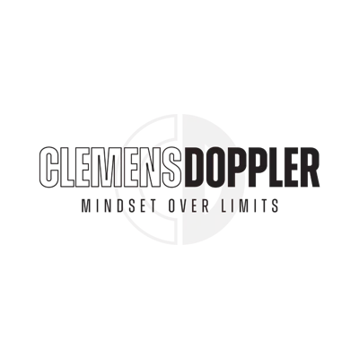
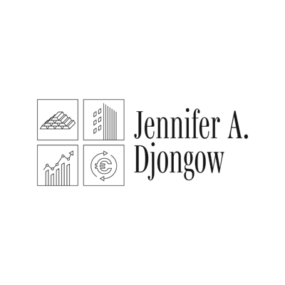
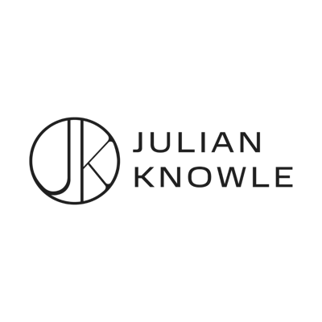
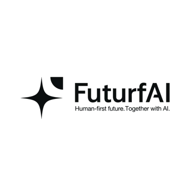
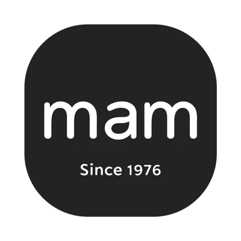
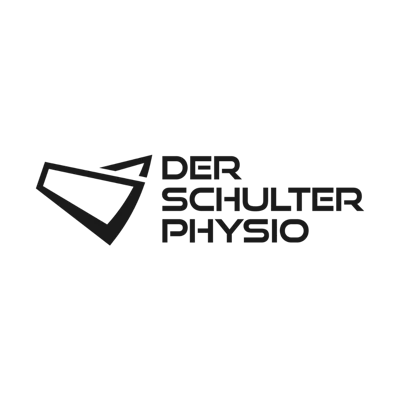
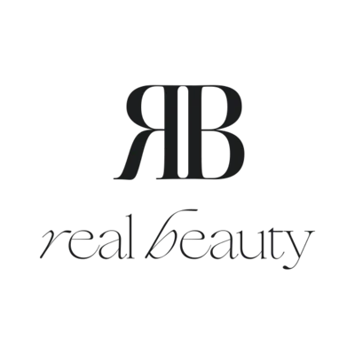
In their words
49 five-star reviews and a HIPE Award for outstanding service and customer satisfaction. Here's what founders say after working with us.
“Within three months my LinkedIn went from invisible to inbound. They rebuilt my positioning and the leads followed.”
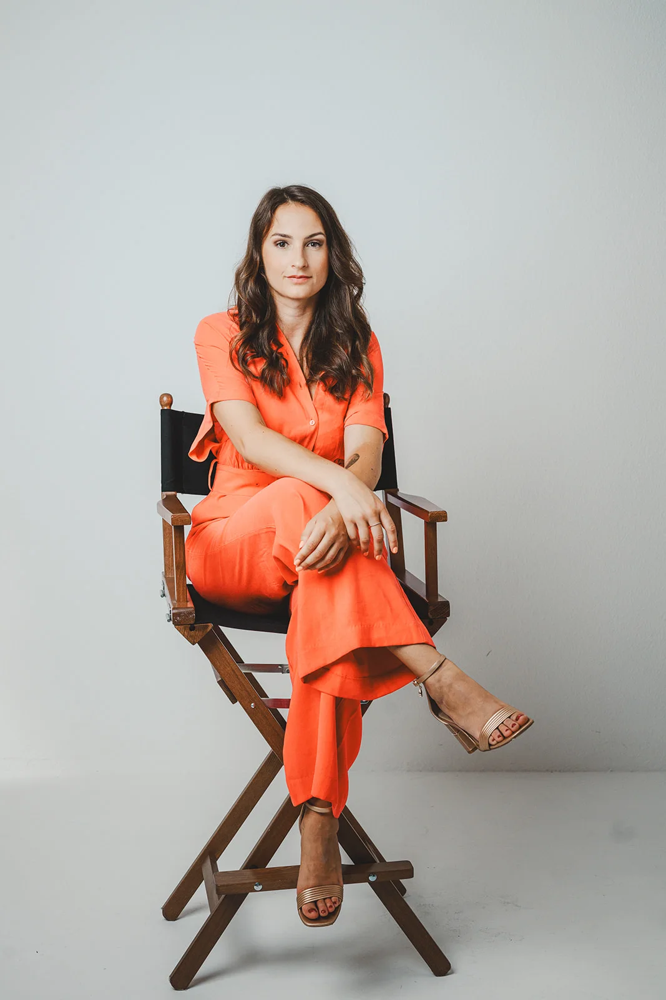
Marcus H. Founder, B2B SaaS“They turned my scattered ideas into a clear brand and a keynote I'm genuinely proud to walk on stage with.”
“The content system they built runs without me. My audience grew while I stayed focused on the business.”
“Finally a brand that actually sounds like me, and converts. Best investment I've made this year.”
“From messy to magnetic. Our website and identity finally match the level of the work we do.”
“Professional, fast and genuinely strategic. The five stars are not an exaggeration.”
If you feel like you and your brand are meant for something bigger, Rysing is the place that gets you.
Newsletter — Sunday Fudge
Get free access to my business and marketing mini-courses
Join 2,000 founders and experts reading Sunday Fudge and learn how to acquire clients, build your online business and grow your following on LinkedIn and Instagram.
- Sharp perspective
- Useful prompts
- Sunday delivery